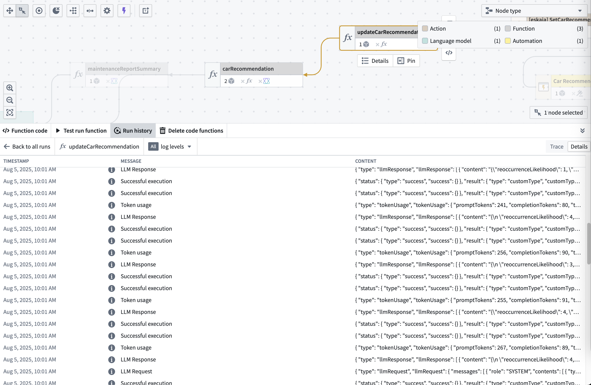
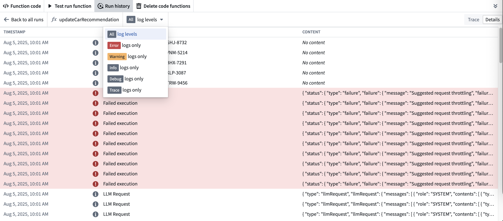
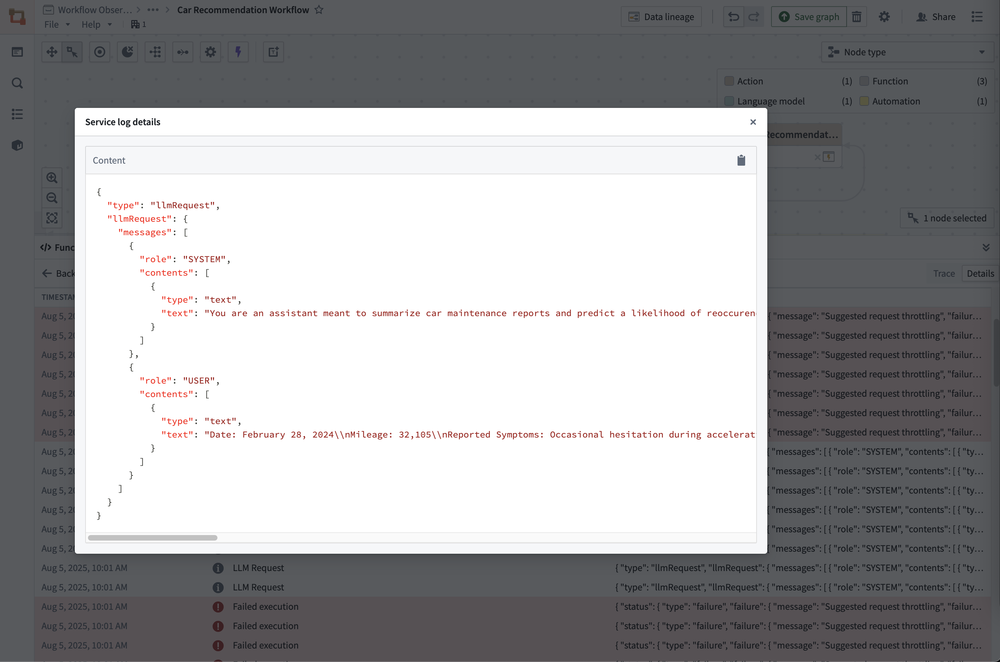

To access detailed logging information, navigate to the Details view after selecting the View log details option for a specific execution.
The service logs provide:
INFO, WARN, ERROR, DEBUG, and TRACE messages.
To view traces and service logs, an administrator must enable log access for the relevant project. Users always have access to logs for their own executions from the past 24 hours, except on CBAC stacks, where log access must be enabled to view trace and service logs.
To filter for specific log levels, use the log levels selector at the top of the table:

Available log levels:
To see the full details of any log entry, select the Content field:

Effective logging helps you debug issues quickly and understand your function's behavior in production. Follow these best practices:
We recommend including identifiers and relevant data that can help you understand what has happened:
```typescript tab="TypeScript v1" // TypeScript v1 example - Good logging practices console.log("Processing order", orderId, "for user", userId); // Include relevant IDs console.log("Retrieved", results.length, "items from Ontology"); // Include counts/metrics console.warn("Retry attempt", attemptNumber, "of", maxRetries, "for operation", operationId); // Include retry context console.error("Failed to process order", orderId, "Error:", error.message); // Include error details
```typescript tab="TypeScript v2"
import { logs } from "@opentelemetry/api-logs";
const logger = logs.getLogger("my-function");
// TypeScript v2 example - Good logging practices
logger.emit({
severityText: "INFO",
attributes: { LOG_MESSAGE: `Processing order ${orderId} for user ${userId}` }, // Include relevant IDs
body: { orderId, userId },
});
logger.emit({
severityText: "WARN",
attributes: { LOG_MESSAGE: `Retry attempt ${attemptNumber} of ${maxRetries} for operation ${operationId}` }, // Include retry context
body: { attemptNumber, maxRetries, operationId },
});
logger.emit({
severityText: "ERROR",
attributes: { LOG_MESSAGE: `Failed to process order ${orderId}. Error: ${error.message}` }, // Include error details
body: { orderId, error: error.message },
});
Never log sensitive information that could compromise security:
// â Don't do this
console.log("User credentials", username, password);
console.log("API response", fullApiResponse); // May contain sensitive data
// â
Do this instead
console.log("Authentication attempt for user", username);
console.log("API call completed with status", response.status);